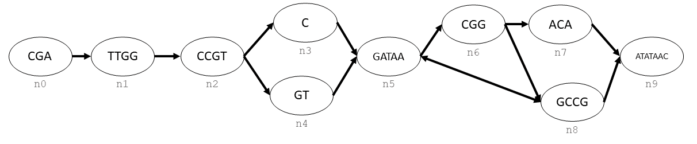

Tutorial¶
Creating Graphs¶
Let’s say that you wanted to create the following graph with ODGI:
This graph is a combination of nodes (labelled as n0, n1, …, n9) and directed edges (arrows).
ODGI Objects¶
Edges and nodes are accessed through a odgi.graph object. Individual nodes in the graph are pointed at by odgi.handle.
Paths in the graph and accessed through odgi.path_handle, which is a series of odgi.step_handle linked together. Each odgi.step_handle is points to the node in that step, and also contains directional information regarding the nodes preceeding and following it.
Handles are pointers to specific pieces of the graph, and it is not possible to operate on them directly, aside from comparing whether the objects are equal. To get information regarding the object that each handle is pointing to, it is necessary to use the corresponding get accessor method in odgi.graph.
Reference materials for these methods can be found at the python API, as well as the Sorted Glossary of Methods, which contains lists sorted by object type for Accessor Methods, Mutator Methods, and Iteratator Methods.
Making a Graph¶
First, we must create the graph, then make each node and keep track of their handles.
gr = odgi.graph()
seq = ["CGA", "TTGG", "CCGT", "C", "GT", "GATAA", "CGG", "ACA", "GCCG", "ATATAAC"]
n = []
for s in seq:
n.append(gr.create_handle(s))
Now we link together these nodes using their handles. Note that each of these handles is directional, so in order to create the bidirectional edge between n5 and n8 we use create_edge twice.
gr.create_edge(n[0], n[1])
gr.create_edge(n[1], n[2])
gr.create_edge(n[2], n[3])
gr.create_edge(n[2], n[4])
gr.create_edge(n[3], n[5])
gr.create_edge(n[5], n[6])
gr.create_edge(n[5], n[8])
gr.create_edge(n[6], n[7])
gr.create_edge(n[6], n[8])
gr.create_edge(n[7], n[9])
gr.create_edge(n[8], n[9])
gr.create_edge(n[8], n[5])
Traversing Edges¶
If we wanted to traverse these edges, we could do it using the iterator method odgi.graph.follow_edges().
def next_node_list(handle):
lis = []
gr.follow_edges(handle, False, lambda y: lis.append(y))
return lis
print(f'n0: {gr.get_sequence(n[0])}')
next_node = next_node_list(n[0])[0]
print(f'n1: {gr.get_sequence(next_node)}')
next_node = next_node_list(next_node)[0]
print(f'n2: {gr.get_sequence(next_node)}')
Which will output the following:
n0: CGA
n1: TTGG
n2: CCGT
A map of the data can be generated using odgi.graph.to_gfa().
print(gr.to_gfa())
Creating a Path¶
Generating a linear sequence from this graph could be done in infinitely many ways, due to the interal loop between n5, n6, and n8. If we wanted to define a single consensus sequence, we would do this by defining a path.

To create the hilighted path, we would need to create a odgi.path_handle in the graph, and then append each odgi.handle to the end of the path.
path = gr.create_path_handle("path")
gr.append_step(path, n[0])
gr.append_step(path, n[1])
gr.append_step(path, n[2])
gr.append_step(path, n[4])
gr.append_step(path, n[5])
gr.append_step(path, n[6])
gr.append_step(path, n[7])
gr.append_step(path, n[9])
Warning
odgi.graph.append_step() will not stop you from appending nodes that are not connected to the preceeding node.
# the following code runs without error
badpath = gr.create_path_handle("badpath")
gr.append_step(badpath, n[0])
gr.append_step(badpath, n[3])
Traversing a path¶
To traverse a path, we need to fetch a series of odgi.step_handle from the graph. Note that although we are effectively asking the path for these items in it, all accessor methods are a part of the odgi.graph object.
step = gr.path_begin(path)
while(gr.has_next_step(step)):
# get the node handle from the step handle
current_node_handle = gr.get_handle_of_step(step)
# ask the node handle for the sequence
print(gr.get_sequence(current_node_handle))
# progress to the next step
step = gr.get_next_step(step)
current_node_handle = gr.get_handle_of_step(step)
print(gr.get_sequence(current_node_handle))
Which will output the following:
CGA
TTGG
CCGT
GT
GATAA
CGG
ACA
ATATAAC
Saving and Loading ODGI Graphs¶
Graphs can be saved and loaded through the odgi.graph.serialize() and odgi.graph.load() methods.
Graph File Example¶
If you wish to save the graph from the above session, that can be done with:
gr.serialize("example_graph.odgi")
This can be loaded into a new python session by using:
gr = odgi.graph()
gr.load("example_graph.odgi")
Loading in Pre-Existing Data¶
Provided that data has been serialized in ODGI format, it is possible to read it directly from a file. Download a *.odgi file and load it into python with:
brca2 = odgi.graph()
brca2.load("cactus-brca2.odgi")
We can poke around this data and get the sequence of the path with:
path_handle = []
handles = []
brca2.for_each_path_handle(lambda y: path_handle.append(y))
brca2.for_each_step_in_path(path_handle[0],
lambda y: handles.append(brca2.get_handle_of_step(y)))
sequence = ""
for handle in handles:
sequence += brca2.get_sequence(handle)
print(sequence)
Reading in a Graph from a Different Format¶
Graph assembies can be created with VG. Currently the method to convert to odgi format is broken, but graphs can be converted to .json format and subsequently converted to odgi with this script.